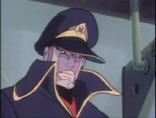

Forums galactiques > Marché galactique : discussions commerciales > The “to be cool” shop!
| smileyoyo4 Renommée de marchand : 664  25/11 ETU 18:09  | Score : 1 Détails Moi je veux voir le loup courir derriere la becane!!
Sa va être marrant. Si andeman se fait choper il va se faire defoncer la tête! Mais sa m'etonnerai que Chef de meute gagne sauf si il se met des reacteur de CLA dans le derriere!! Aie, sa doit faire mal!!!! | ||
| Beth le cerf blanc Renommée de marchand : 112  25/11 ETU 18:56 | Score : 0 Détails "Je veut une moto >_<,je ferai la course avec Andeman!^^"
| ||
| Demettra Renommée de marchand : 348  25/11 ETU 19:00 | Score : 0 Détails Je prendrai une moto suuuuuper coooool avec un type suuuper cooooool dessu et des dessous en cuir suuuper coooooooool...
| ||
| Danny Zuko Renommée de marchand : 189  25/11 ETU 19:13 | Score : 0 Détails Danny ricana du succes de cette futur course.. Il dits a ces amis
Bon ok nous avons la trois gars assez fous pour tenter.. J'aimerait qu'Andey le fasse.. Ca fait donc 4 mec qui le font... Wolfy, et wai on est pote, accepte tu de participer a cette course pour la gloire de vos loups... tu as le droit a 8 loups choisi tes meilleurs... Quand aux autres votre motos ne doit pas depasser une certaine vitesse? M'en fous de toute facon vu l'etat de la route vous allez pas pouvoir aller bien vite... Si elle est accepté vous voulez la faire quand la course les mecs? Demain soir de 20h a 21h c'est bon? Repondez moi rapidement les mecs comme ca je peux commencer les paris.. ok les mecs? Il attenda la reponse des autres.. Il fuma une clope et en offert aux autres... | ||
| andeman Renommée de marchand : 1393  25/11 ETU 19:19 | Score : 0 Détails Parfait pour la course!
ca me branche bien! Quant au sac a puce, il va avoir une jolie trace de pneu sur petit dos tres bientot. Je me demande par contre comment je pourrais taner sa fourrure, cachez nez? Tapis de salle de bain? carpette essuie tout, ou tout simplement un joli empaillage? Ha oui la derniere idee me plait, je te mettrais en scene en train d'essayer de bouffer ta queue, c'est pas ce qu'ils font les toutous?^^ | ||
| Danny Zuko Renommée de marchand : 189 25/11 ETU 19:27 | Score : 1 Détails Danny attendait seulement la confirmation du loup mais a mon avi ca allez pas poser de probleme... Il dits donc aux autres:
Bon les gars... La course commence demain a midi et se finit demain quand un gars aura gagner.. Wolfy ton but c'est d'arreter tout le monde.. wai c'est dure mon pote mais ta 8 loups plus toi avec toi.. Quand aux autres prenez tous une moto mais pas trop rapide... Une moto a essence ( et wai ca explose mec mais c'est la classe) et a deux roue obligatoire.. ok les gars? Et Danny se ralluma encore une clope... Bon les gars voici un beau petit hrp pour vous expliquer ce que je vais faire.. Les paris vont etre faite mais l'argent reste fausse. Il n y a donc pas de leems a gagner... Le gagnant c'est a vous de voir.. Vous faites votre propre rp et je vous suivrai en commentant... Bref c'est un vrai rp.. ou personne ne sait qui va gagner.. Bien sur faut que quelques personnes perdent alors restez fairplay/.. ca serait simpa.. mais faut que ca dure un minimum.. donc ca commence a 12h... Les coureurs ecrivent en italique... et les parieurs en different... alors ca vous dits? | ||
| andeman Renommée de marchand : 1393 25/11 ETU 19:34 | Score : 0 Détails Je mise 100.000 leems sur ma pomme, et je ramene la queue du loup en bonus.
| ||
| smileyoyo4 Renommée de marchand : 664 25/11 ETU 19:36 | Score : 1 Détails Moi je parie 100mo sur le loup!
Mais je double la mise si il arrive a prendre le meta-slip de Andeman! C'est pour la colection de Yoh^^ | ||
| andeman Renommée de marchand : 1393 25/11 ETU 19:41 | Score : 0 Détails Monsieur est joueur.
Ok je mets la meme mise. Y'a un loup qui va souffrir Demain je serais la par intermittence, donc ne vous inquietez pas si je ne reponds pas a vos Rp, d'tfacon c'est ma moto kiest la plus forte! | ||
| Danny Zuko Renommée de marchand : 189 25/11 ETU 20:00 | Score : 0 Détails
Ok les mecs on a deja 100 mlns sur le loup et 100mlns sur Andey... C'est partie! Qui mise? | ||
| Dedee Renommée de marchand : 83  25/11 ETU 20:18 | Score : 2 Détails Ce serait possible euh..."Poto" d'avoir un sit-car un grand pour moi, et quelqu'un pour me conduire ce serait euh...hum... "Groovy", et je suis preneur au fait pour le kilt... "Fashion"...
Merci | ||
| Danny Zuko Renommée de marchand : 189 25/11 ETU 20:23 | Score : 0 Détails Danny ricana en voyant la scene... des loups courant apres Dedee qui etait dans un sit-car... Enfin bon c'etait lui qui le voulait il dits donc:
Bon ok mec si t'es la demain a 12h ( ecris un mp de confirmation avant) t'est dans la course.. j'essaye de te chopper un sitcar pour toi.. Je t'amene ca demain ok mon pote? Parcontre ca va etre assez mouvementé pour toi je prefere te le rappeler.. Mais bon tu serais groovy baby... yeah la classe mec... yeah les gars... | ||
| Beth le cerf blanc Renommée de marchand : 112 25/11 ETU 20:31 | Score : 0 Détails "Comme je l'ai dit je veut une moto pour combattre contre Andeman donc 100mo sur moi et sur le Meta-Slip!^^"
| ||
| zambalaya Renommée de marchand : 42  26/11 ETU 01:56 | Score : 3 Détails Zambalaya entra sans frapper...
sans frapper Danny Zuco pour être précis... car la porte grossière en aggloméré qui gardait le garni graisseux avait grincé et gonflé avant que ses éclats ne volent longuement dans la pièce... Les commandants présents constatèrent que les générateurs gravitationnels du graveleux gominé n'étaient guère garantis, et qu'ils auraient du se garder de graisser leurs gilets avec l'onguent greasien car leurs galures et leurs godasses étaient maintenant dégoutants et garnis de gros grains... Englués comme des galopins dans la gadoue, certains se grattaient sans gloire, d'autres glapissaient, les plus guindés grinçaient des dents...on aurait cru un gala de guignols... Danny Zuco, grimacant, se glissa derrière son guichet et déglutit... ..gasp.. Il n'était jamais très glorieux quand il guettait au loin la stature grandiose de Zambalaya, et se gardait toujours de glousser l'une de ses gaudrioles de gaudelureau devant ce général-là. Du coin de son oeil glauque, il guignait les gants de son visiteur, craignant un gnon... Zambalaya regarda un instant la scène grotesque, puis il dit: Zuco! votre industrie granguignolesque empeste la galaxie! Cette graisse que vous produisez en masse dans le système que nous partageons est une pollution plus nuisible que le manque de noblesse de votre vocabulaire. Si je me suis rendu ici, c'est pour vous demander de déplacer vos usines nauséabondes au plus loin de mes planètes, et de cesser de faire le tour des PC avec vos escouades de motocyclettes. Mon peuple en a assez. Je vois de plus que vous sévissez au sein même de l'assemblée. J'ai donc décidé de vous aider à montrer la vraie nature de votre personnalité au yeux du monde.. Sans plus de discours, Zambalaya leva la main et deux droïdes apparurent derrière lui, portant un volumineux conteneur de goudron. Ils l'amenèrent promptement au dessus de Danny Zuco, qui d'un bond tenta de gagner le fond du hangar pour prendre le large au guidon d'une de ses guimbardes. Mais dans sa galopade, il glissa sur un glaviot et se prit une gamelle galactique... Zambalaya fit verser sur lui le goudron gluant puis fit venir deux autres droïdes, cette fois avec un grand sac de plumes qu'il vidèrent sur l'infortuné... Les capitaines étaient médusés. Zambalaya repartit sans un mot, il avait l'air plus gai que jamais... | ||
| zambalaya Renommée de marchand : 42 26/11 ETU 02:06 | Score : -1 Détails ....
| ||
| Beth le cerf blanc Renommée de marchand : 112 26/11 ETU 08:42 | Score : 0 Détails HRP//Sauf que tu peut pas faire jouer danny...et que tout simplement tu est totalement hors sujet...tu a écris un message pour des prunes.//HRP
"Mince..." Beth courut la Keyblade a la main et assoma Zambalaya avec un super coup mega fort qui le force a plus ecrire de message ici et qu'il peut pas esquiver... (HRP//Tu voit c'est super de faire jouer les gens.../HRP) | ||
| smileyoyo4 Renommée de marchand : 664 26/11 ETU 08:56 | Score : 1 Détails Smileyoyo se regardait avec sa nouvelle veste et ne compris rien a ce que l'intru disait!
Mais personne n'a mit de graisse sur sa veste et ses chaussures? Ahhhhhhhh, vous parlez de Dedee! Lui c'est normal, la graisse c'est 95% de son corps! Je me disais c'est pas possible de bousiller une veste a ce prix la pour sa! | ||
| Dedee Renommée de marchand : 83 26/11 ETU 09:04 | Score : 1 Détails Bon votre sitcar "poto" Danny est euh... "Super-Over-Méga-Giga-Cool", mais bon voilà quoi euh... mec, il ya comment dire un léger problème de surcharge... héhéhéhéhéhé.
Donc je me desiste de la course, ce qui n'est pas du tout euh... Groovy, ah non pas du tout, mais par contre si vous possèdez un remorqueur de Croiseur HA, alors je suis votre limace... | ||
| Danny Zuko Renommée de marchand : 189 26/11 ETU 12:11 | Score : 0 Détails Danny boy regarda entrer le General... Il etait un peu vieux jeu pour rentrer ici mais bon il le laissa comme meme rentrer.. Le general avait l'air reveur.. Danny se demanda ce qu'il avait a sourire betement.. Mais bon au moment ou il ne faisait rien de pas cool, ce qui m'ettonerait.. Il peut rester la...
Et puis Ah Beth mon pote qu'est ce que t'a fais? M***** bon les gars virez moi ce corps. NOn je parle pas a toi Beth mais a mes collegues de ma bande.. Bon la course est dehors Beth je t'attends la ba... Dedee tu pourras nous rejoindre en cours de route.. T'inquiete l'armature des Bullet Enfields peut vraiment de supporter... wai c'est vrai mon pote.. donc si tu peux tu rentre en cours de route, ok mec? Bon je revois tous la ba ... J'ai encore un autre vaisseaux pres de la taverne.. enfin y a du monde donc vous allez voir... Et Danny boy sauta sur son enfield diesel ( ca c'est la classe) et parti a la Taverne.. Quelle classe ce mec! | ||
| Beth le cerf blanc Renommée de marchand : 112 02/12 ETU 19:16 | Score : 0 Détails "Je l'ai juste assomé!Je le jure! ^^"
"Merci pour tout tes produits!" |
Forums galactiques > Marché galactique : discussions commerciales > The “to be cool” shop!